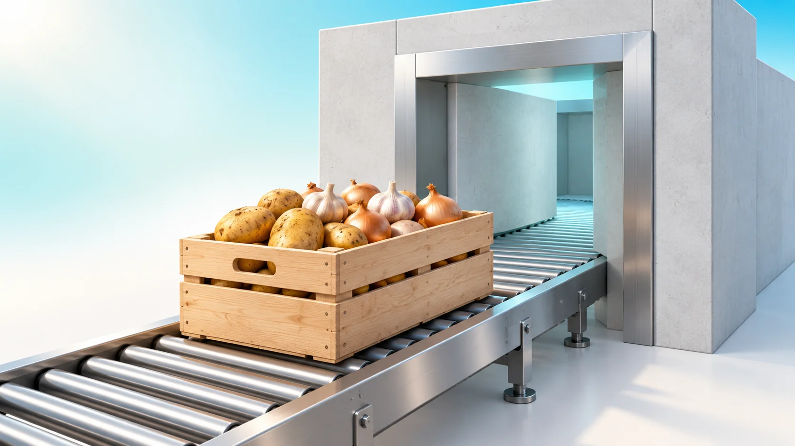
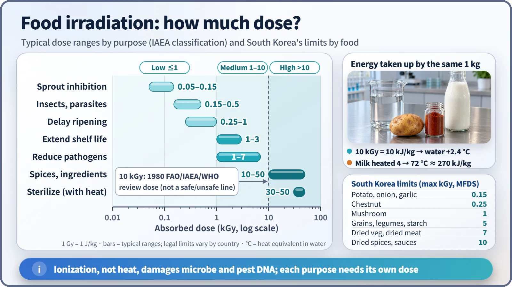
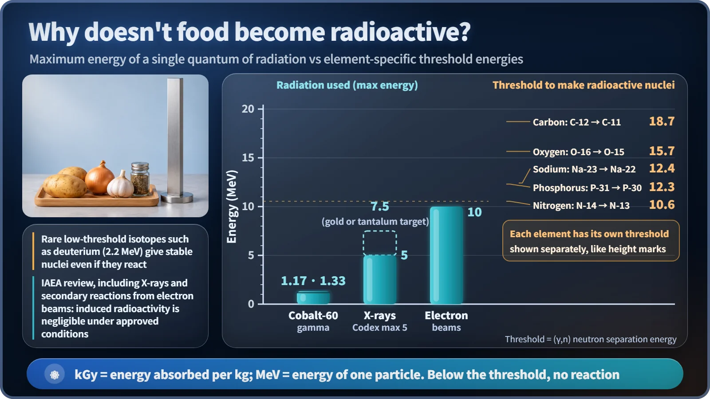

Society, Environment & the Future · 280
Cold Pasteurization with Radiation Instead of Heat — Food Irradiation, Myths and Facts
Ionizing radiation does the work of heat with very little energy, permitted energies stay below activation thresholds, and use is limited by food, dose and labeling.

Food irradiation sterilizes and preserves food with ionizing radiation instead of heat. Doses are small in energy terms (10 kGy would warm water by only about 2.4 °C), the permitted energies stay below the thresholds needed to make the main food elements radioactive, and in South Korea it is limited to set foods and doses and must be labeled.
Picture a box of potatoes that has been exposed to gamma rays to keep them from sprouting. Now hold a radiation meter up to the potatoes. Will the needle start dancing?
The answer is no. The meter reacts exactly the same before and after treatment: only to the natural radioactivity the potatoes always had. Let's see why, and sort food irradiation into myths and facts.
What if you shone a light instead of heating the milk?
Food irradiation is a treatment that exposes packaged food to a set amount of ionizing radiation, such as gamma rays, electron beams or X-rays, to suppress sprouting, insects and microorganisms. Ionizing radiation is radiation energetic enough to knock electrons off the atoms in a material.
The closest relative is milk pasteurization. Heat milk to 63 °C for 30 minutes, or to 72 °C for 15 seconds, and pathogens drop sharply while the milk stays milk. Food irradiation does the same job with ionizing radiation instead of heat. Gamma rays and X-rays are very energetic, invisible light, and an electron beam is a stream of fast-moving electrons. Because the food barely warms up, it's sometimes called "cold pasteurization."
The way it works is different, too. Heat warms the whole food and wrecks the proteins of germs. Radiation ionizes atoms as it passes through, and the resulting reactions damage DNA and other molecules inside cells, so bacteria and insects can no longer reproduce. Sprout-bud cells stop dividing for the same reason.
Surprisingly little energy, in numbers
The amount of radiation is measured as absorbed dose. The unit is the gray (Gy): 1 Gy means 1 kilogram of material has received 1 joule of energy. For food, the kilogray (kGy), 1,000 times larger, is the usual unit.
The temperature rise equals the absorbed dose divided by the specific heat, ΔT = D ÷ c. For water, the 0.15 kGy used to stop potatoes sprouting raises the temperature by 0.04 °C, and even the 10 kGy used to sanitize spices adds only about 2.4 °C. By contrast, heating chilled milk to 72 °C takes about 270 kilojoules per kilogram, 27 times as much as 10 kGy. Instead of heating everything, irradiation directly damages the blueprint of life, so a small amount of energy is enough. Of course, low energy alone doesn't prove safety, which is why safety has been assessed separately over many years.

The dose needed depends on the purpose. In the typical ranges compiled by the International Atomic Energy Agency (IAEA) and others, sprout inhibition uses 0.05–0.15 kGy, insect control 0.15–0.5 kGy, reducing spoilage organisms and pathogens 1–7 kGy, and removing microbes from ingredients such as spices 10 kGy or more. Full sterilization, as for space food or meals for patients with weakened immunity, uses 30–50 kGy together with heat. Insects have large, complex DNA and are vulnerable even to small doses, while bacterial spores in tough coats and viruses need much more. [1]
So why doesn't the food become radioactive?
Back to our opening question. For a material to become radioactive, its nuclei must change and new, unstable nuclei must form. To knock a neutron out of a nucleus, radiation needs at least a certain energy, called the threshold energy, which differs from reaction to reaction.
Let's separate two units here. The kGy above is the total energy received by 1 kilogram of food; the MeV (megaelectronvolt) that follows is the energy carried by each individual quantum of radiation. However large the dose, if each quantum is too weak, the nucleus doesn't change.
Among the main elements in food, the lowest threshold is about 10.6 MeV, for nitrogen turning into radioactive nitrogen; oxygen's is 15.7 and carbon's 18.7 MeV. Some rare isotopes, such as deuterium, have lower thresholds, but the nuclei those reactions produce are stable and not radioactive. Meanwhile, the energies allowed by the Codex Alimentarius food standards are up to 1.33 MeV for cobalt-60 gamma rays, 5 MeV for X-rays and 10 MeV for electron beams. South Korea, the United States and others allow X-rays up to 7.5 MeV when a gold or tantalum target is used, and that too is below the thresholds of the main elements. An IAEA review that also considered trace elements and the X-rays generated by electron beams concluded that in this range, radioactivity is either not produced or, if produced, is far smaller than the food's natural radioactivity. [2] [3]

The source never even touches the food. Packaged boxes simply pass beside sealed metal capsules, and electron-beam and X-ray machines stop producing radiation entirely when switched off. It's the same reason your body doesn't become radioactive after a dental X-ray. "Radioactive contamination," where radioactive material gets on or into something, and "irradiation," where some energy is absorbed but no radioactive material is added, are completely different things, just as radioactivity and radiation are different things.
Safety assessments have built up over decades. In 1980, a Joint FAO/IAEA/WHO Expert Committee (the UN Food and Agriculture Organization, the IAEA and the World Health Organization) concluded that an overall average dose of up to 10 kGy presents no toxicological hazard. That doesn't make 10 kGy a line between safe and unsafe. In 1997, a WHO study group judged that doses appropriate to the technical purpose are safe and nutritionally adequate even above that level. [4]
The rules for our tables: set foods, set doses, and labels
In South Korea, the Ministry of Food and Drug Safety allows food irradiation only for sprout inhibition, insect control, sterilization and ripening control, and only for specified, hygienically handled foods. Food that has been irradiated once may not be irradiated again, and each food has a limit: 0.15 kGy or less for potatoes, onions and garlic, 0.25 for chestnuts, 1 for mushrooms, 5 for grains and starch, 7 for dried vegetables and 10 kGy or less for dried spices. [5]
And it isn't hidden. Irradiated finished products carry a phrase such as "irradiated" together with the international Radura symbol, a plant with two leaves inside a circle. If an irradiated ingredient is used, the ingredient list must say so, for example "onion (irradiated)." There are also laboratory detection methods that can tell whether food has been irradiated, which are used to enforce the labeling rules.
Not a magic washing machine
To be fair, the limits matter too. Food irradiation is no substitute for good hygiene, and the international standards say so plainly. It can't rescue food that has already spoiled, it can't destroy toxins that bacteria have already produced at permitted doses, and it can't prevent recontamination after treatment. Fatty foods may develop off-odors from oxidation, some fruits soften, and some nutrients such as vitamin B1 decrease slightly, much as with other processing such as heating. That's why it's rarely used for foods like milk whose flavor changes easily.
In short, food irradiation is a sterilization and preservation technology that uses ionizing radiation instead of heat. At approved energies the food does not become radioactive, and its use is controlled by specified foods, specified doses and labeling. If you spot the Radura symbol at the supermarket, you can now read it not as "radioactive food" but as a notice: "this product has been through this treatment." The choice, as always, is yours.